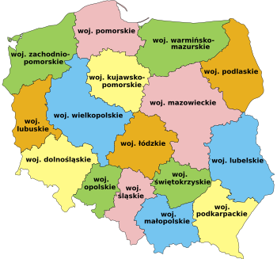

Kryterium sukcesu 2.4.4 Cel łącza (w kontekście)
Dobre przykłady
Łącza tekstowe z dokładną nazwą
Accens - strona głównaJak zorganizować spektakl dostępny dla osób z niepełnosprawnością wzroku
Łącza w postaci obrazów z poprawnym atrybutem 'alt'
Łącze, którego cel wynika z kontekstu
Pobierz książkę w postaci: mp3
Łącze uzupełnione o niewidoczny tekst odczytywany przez czytnik ekranu
Wielkie zmiany w polityce
Bla bla bla bla, zajawka arytułu o wielkich zmianach w polityce, bla bla bla bla
Czytaj więcejo Wielkie zmiany w polityceŁącze znajdujce się wewntrz dobrze opisanej tabeli
| Nazwa produktu | Cena | Dostępna ilość | Kup teraz |
|---|---|---|---|
| Telefon | 1000 zł | 10 sztuk | Dodaj do koszyka |
| Komputer | 6000 zł | 5 sztuk | Dodaj do koszyka |
| Tablet | 3000 zł | 15 sztuk | Dodaj do koszyka |
Łącze znajdujce się wewnątrz dobrze opisanych elementów listy
- Najnowszy artykuł. Czytaj więcej
- Najczęściej czytany artykuł. Czytaj więcej
- Artykuł z największą ilością rekcji. Czytaj więcej
Dobre praktyki:
Link jeśli znajduje się w zdaniu, to powinien by raczej na jego końcu a nie na pocztku
Unikajmy linków z tekstem: "kliknij tutaj", "czytaj więcej", "link"
Jeśli link otwiera się w nowej karcie przegldarki to opisujmy go przynajmniej niewidocznym tekstem np.: Wikipedia Otwiera się w nowej karcie.. Najlepiej jednak zrobi to przy pomocy widocznego tekstu: Wikipedia. Otwiera się w nowej karcie. lub zastosowa ikonkę z altem "Otwiera się w nowej karcie": Wikipedia 
Złe przykłady
Niedokładne nazwy linków
Kliknij linkStrona główna
Łącza w postaci obrazów z niepoprawnym atrybutem 'alt'
Łącze nie zawierajce kontekstu
Pobierz książkę w postaci:
Z ostatniej chwili: Ważne wydarzenie
To jest zajawka artykułu o ważnym wydarzeniu, które stało się dosłownie chwilę temu. Musisz to przeczytać
Linki znajdujce się w nieodpowiednio opisanej tabeli
| Artykuł o ważnym wydarzeniu | Czytaj więcej |
| Artykuł o wynikach wyborów | Czytaj więcej |
| Artykuł o ważnym wydarzeniu | Czytaj więcej |
Łącze znajdujce się wewnątrz osobnych elemntów listy
- Najnowszy artykuł.
- Czytaj więcej
- Najczęściej czytany artykuł.
- Czytaj więcej
- Artykuł z największą ilością rekcji.
- Czytaj więcej